Nos encargamos del diseño y montaje de stands para ferias y congresos. Stands modulares, stands semidiseño o stands de diseño libre totalmente personalizados.
Nos encargamos del diseño y montaje de stands para ferias y congresos. Stands modulares, stands semidiseño o stands de diseño libre totalmente personalizados.
Somos especialistas en organización integral de ferias y congresos, donde los stands modulares son la opción más económica para ofrecer una zona comercial.
Los stands modulares están hechos en perfilería de aluminio y son muy adaptables permitiendo un diseño personalizado. Son rápidos de montar y se adaptan a cualquier tipo de espacio.
En Tuevent nos encargamos de todo el proceso de planificación: diseño, distribución en el plano y montaje.
Los stands de semidiseño son stands reutilizables pero totalmente adaptados a las necesidades del cliente. Suelen estar hechos con estructuras especiales que los hacen totalmente diferentes a los stands modulares tradicionales.
Finalmente, diseñamos y llevamos a cabo la construcción de stands de diseño libre. Stands totalmente personalizados y construidos especialmente para la ocasión. Es la mejor forma de diferenciarse totalmente en el evento. Requiere de la dedicación de más recursos, pero los resultados son inigualables.
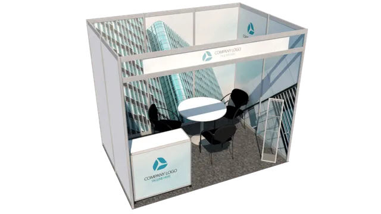
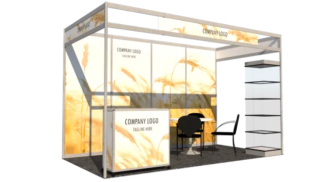
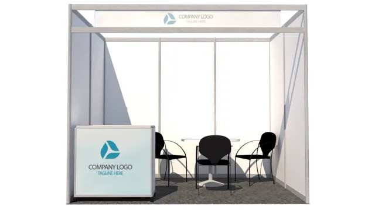
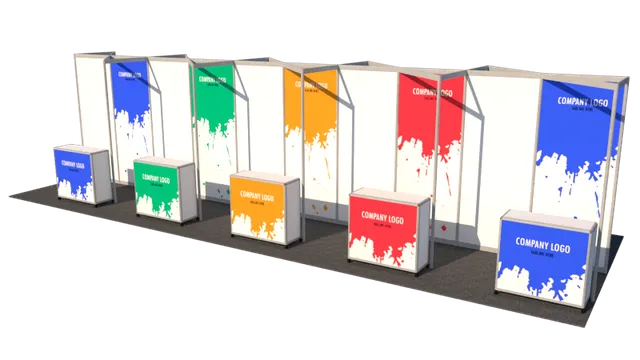
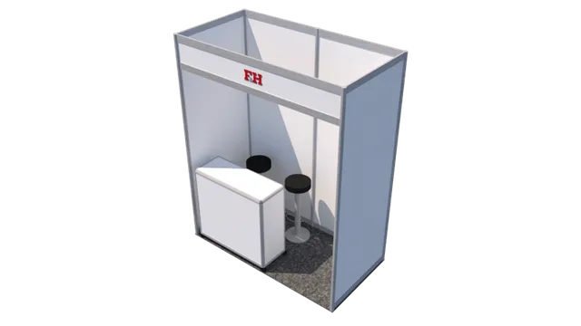
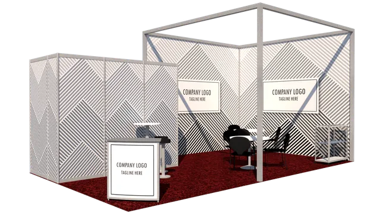
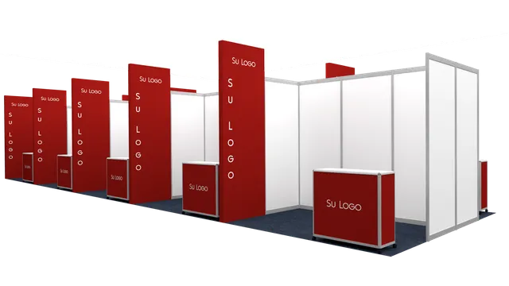
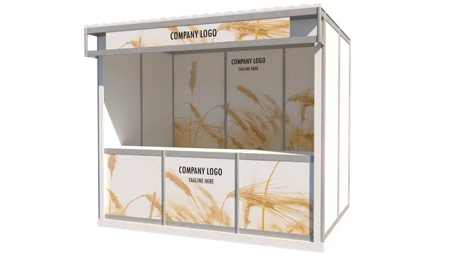
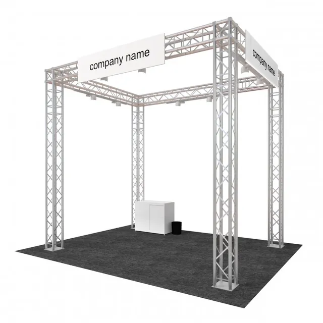
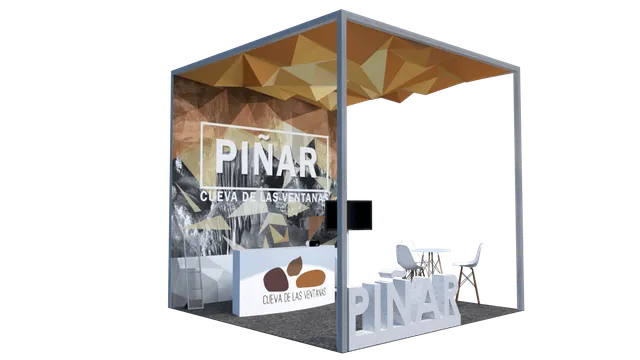
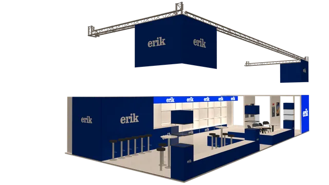
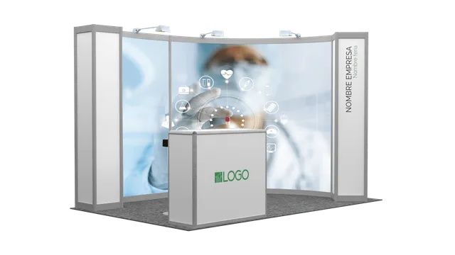